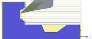
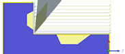
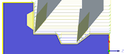

Autoriser le rainurage axial
Autoriser le rainurage radial et axial
Utilisez cette option pour autoriser ou limiter le mouvement de dégagement de gorges de la trajectoire d'outil. Peut être utilisée pour empêcher l'outil de se retrouver dans les canaux au niveau du diamètre, de la face ou de l'extrémité de la pièce.
 |
 |
Ne pas autoriser le rainurage |
Autoriser le rainurage radial |
 |
|
Autoriser le rainurage axial |
Autoriser le rainurage radial et axial |
Remarque: la géométrie de l'outil détermine l'efficacité de l'évidement d'une zone.